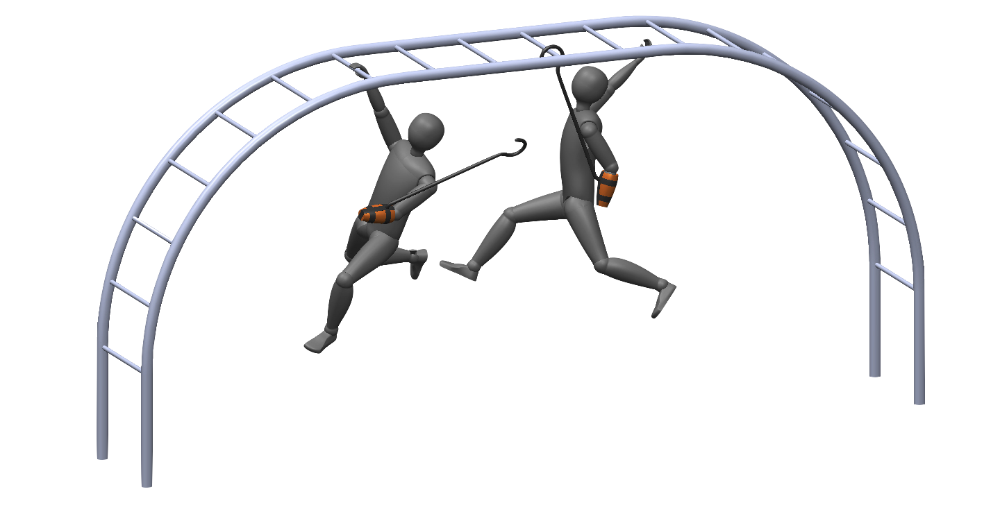

MonoMano (Monkey Bars Prosthesis)
Inception
This challenge came to me in the form of a project for a class on assistive technologies. The task was to create a limited-use prosthetic that would enable a little girl to swing on the monkey bars of a jungle gym, despite her below-elbow arm amputation.
Concept
A light, easy-to-remove prosthesis, suitable for holding a human's weight, and specialized to the task of swinging on a set of monkey bars. Our most significant insight was that the loading conditions involved would be best satisfied by placing the interface between human and prosthesis far below the intended interface between the prosthesis and the environment.
Tools
|
Materials
|